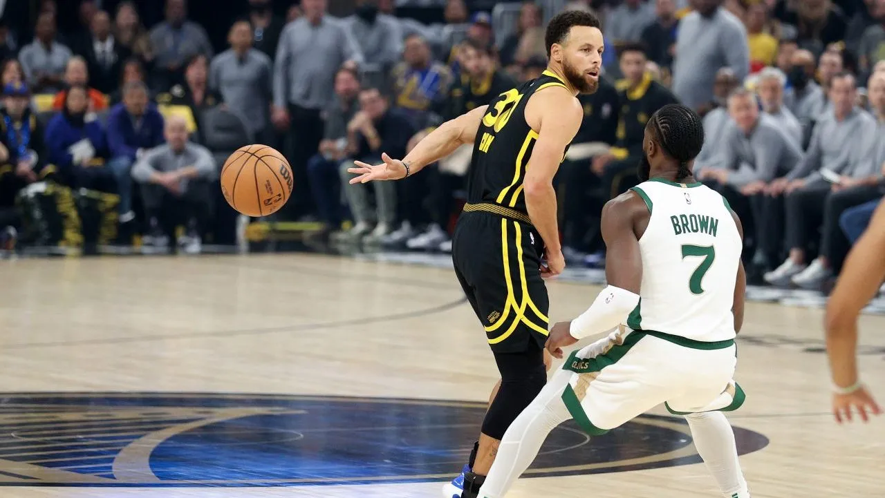
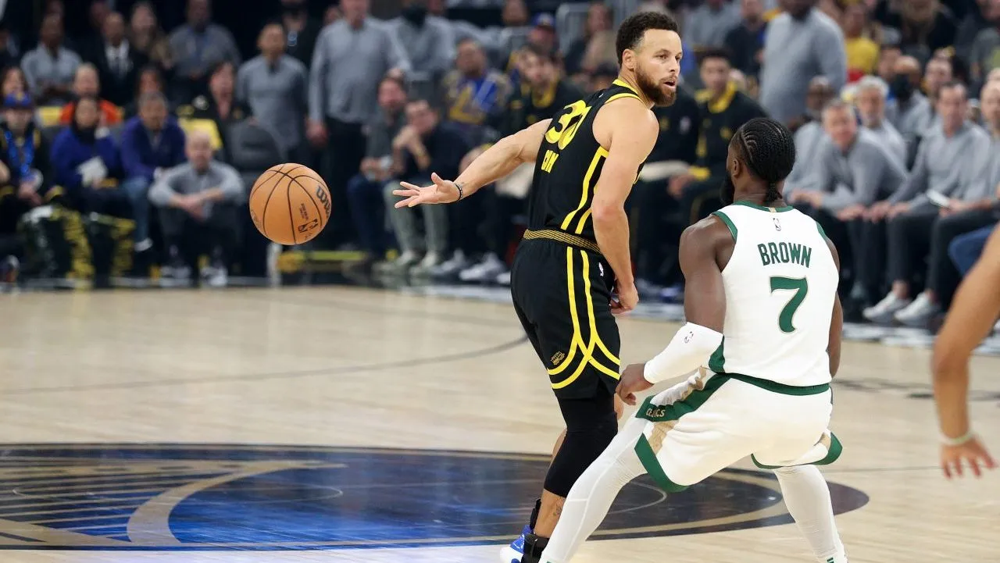
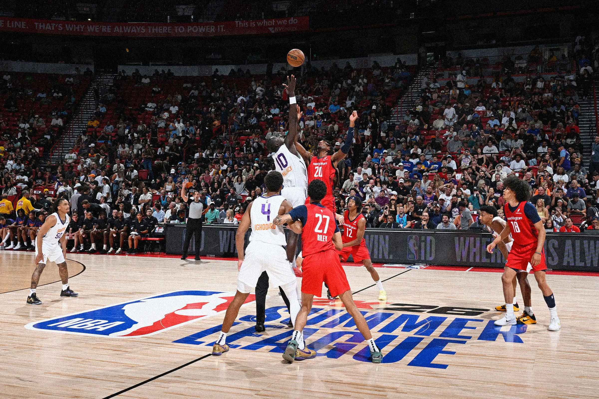
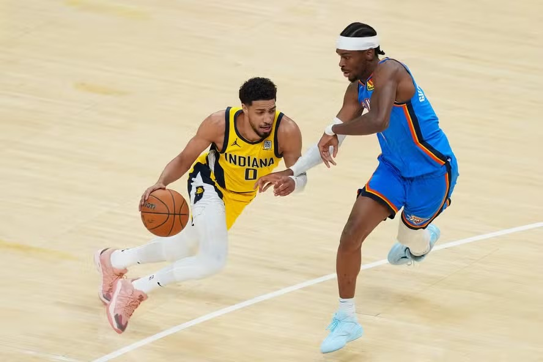
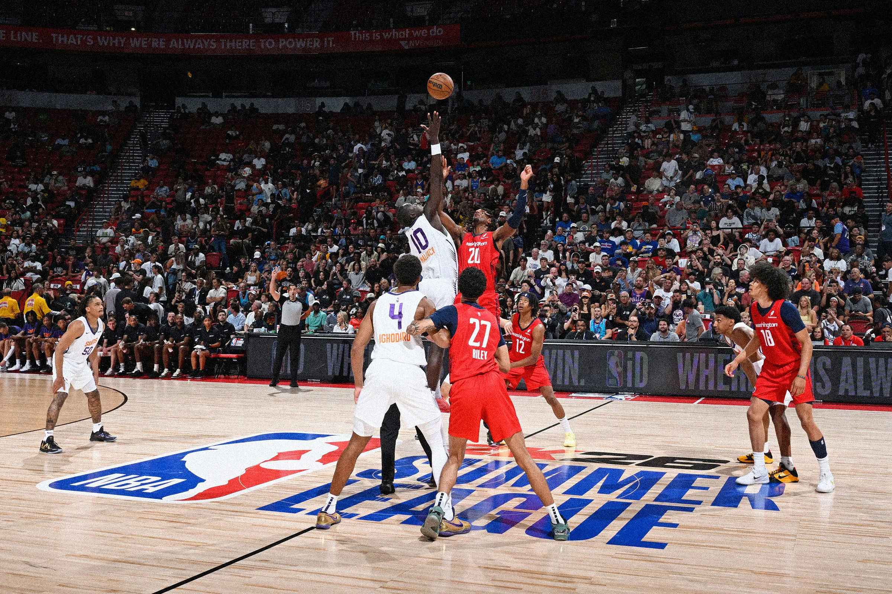
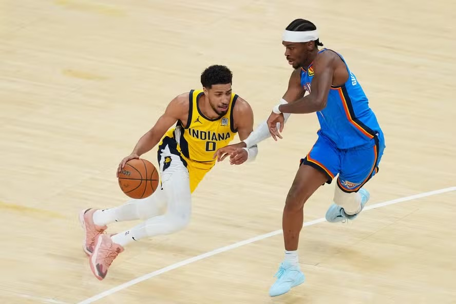
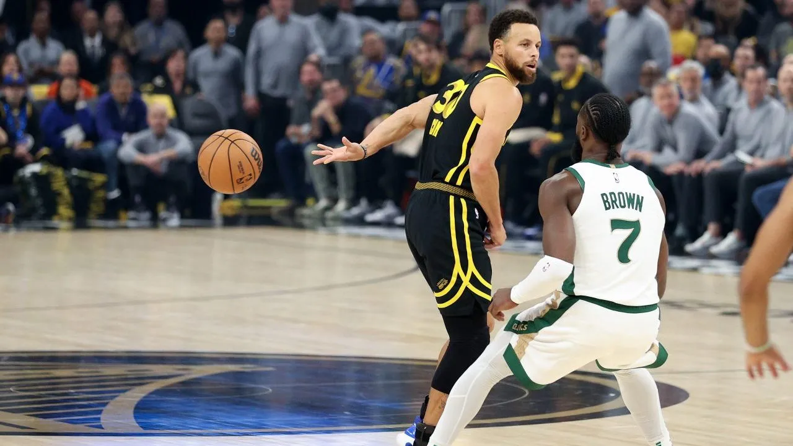
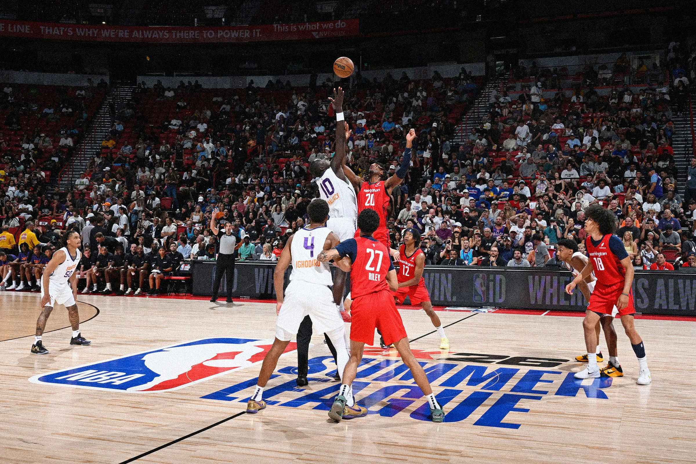
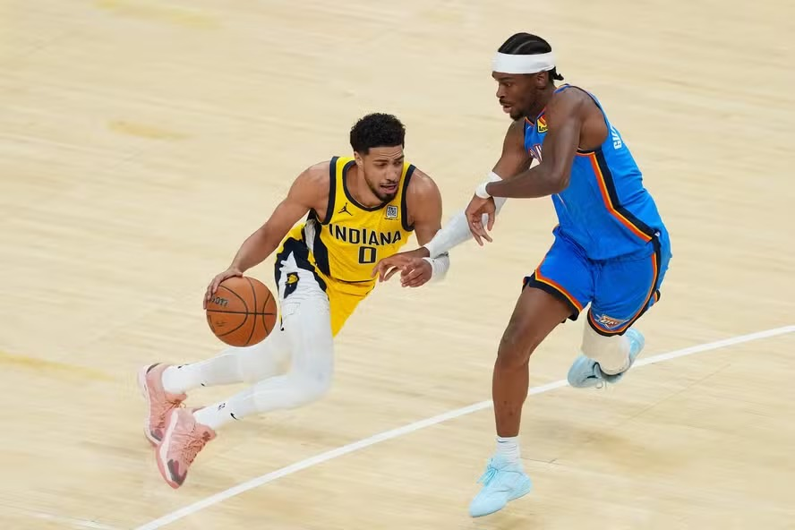

Galeria
 

 



A NBA (National Basketball Association) é a principal liga de basquete profissional do mundo, composta por equipes dos Estados Unidos e, desde 2017, uma franquia canadense. Fundada em 1946, a liga cresceu de uma organização regional para uma das maiores potências esportivas globais, com uma enorme base de fãs e um impacto cultural profundo.
A NBA é reconhecida pela sua alta qualidade de jogo, que reúne os melhores atletas da modalidade, atraindo talentos de todo o planeta. O torneio é dividido em duas conferências – a Conferência Leste e a Conferência Oeste – e cada uma delas possui 15 equipes. Durante a temporada regular, cada time disputa 82 jogos, com as melhores equipes se classificando para os Playoffs, onde a competição se intensifica até a grande decisão, o NBA Finals, onde o campeão é coroado.
Além de ser um grande espetáculo esportivo, a NBA também é uma plataforma de desenvolvimento de atletas, cultura e inovação, influenciando a moda, a música, os negócios e até mesmo questões sociais e políticas. Com lendas do basquete como Michael Jordan, Kobe Bryant, LeBron James, Magic Johnson e muitos outros, a NBA deixou uma marca indelével na história do esporte.
A liga é também uma das mais lucrativas, com contratos de TV, parcerias de patrocínio e vendas de mercadorias alcançando valores astronômicos. Não à toa, a NBA se tornou um ícone global, conectando culturas e pessoas através do amor pelo basquete.
Veja 3 dos principais jogadores da liga atualmente:
Stephan Curry
País: EUA
Posição:
Time
Stephan Curry
País: ?
Posição:
Time
Stephan Curry
País: EUA
Posição:
Time


